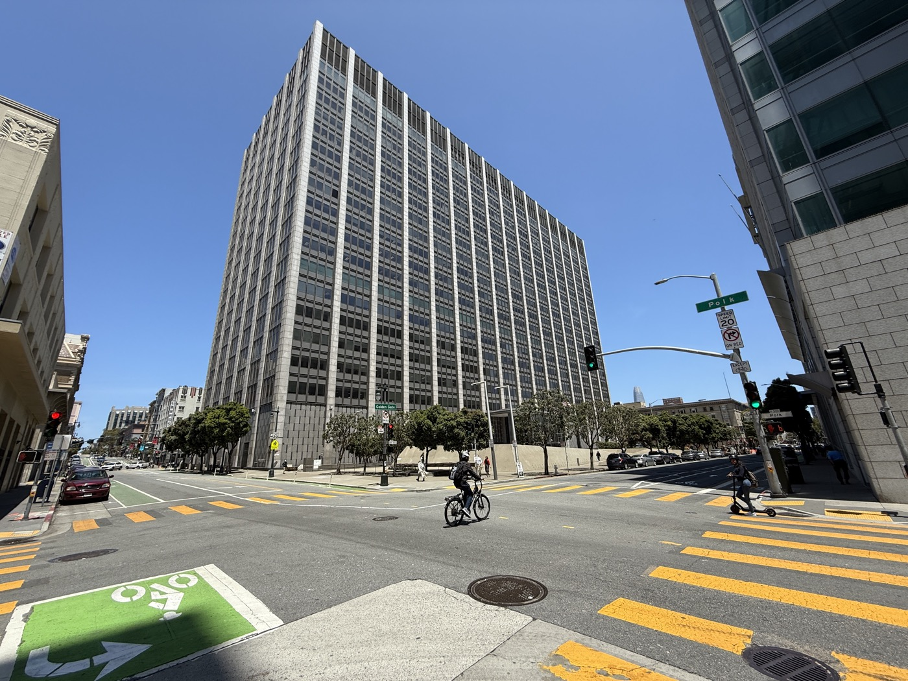
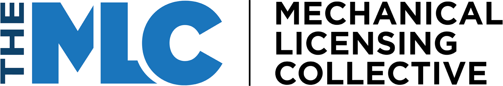

Executive Summary
앤트로픽이 저작권 집단소송을 15억 달러에 합의하면서 약 50만 종의 저작물에 1건당 3,000달러가 매겨졌다. 지난 7월 법원의 최종 승인이 떨어져 돈이 실제로 움직이기 시작했고, 이번 주 청구인들에게 배분 내역 확인 통지가 나갔다. 그 통지를 열어 본 저자들이 낯선 이름을 발견했다. 오래전에 자기 손으로 돌아온 책의 권리를 옛 출판사가 청구하고 있었다.
배분 규칙 자체는 복잡하지 않다. 절판되어 권리가 저자에게 돌아갔거나 자비출판한 책이면 저자가 3,000달러 전액을 받고, 현행 출판 계약이 살아 있으면 저자와 출판사가 절반씩 나눈다. 갈림길은 2022년 8월 10일이다. 합의서가 앤트로픽의 다운로드 날짜로 정한 이 날짜 이전에 권리가 반환됐어야 저자가 전액을 청구할 수 있다. 문제는 그 반환이 언제 일어났는지를 업계 어디에도 정확히 적어 둔 곳이 없다는 데 있다.
3절까지는 보도와 1차 자료가 확인한 사실을 따라간다. 4절에서 데이터 거버넌스 쪽으로 옮겨 적는 부분은 자료에 없는 이 글의 해석이다.
주요 수치
출처: TechCrunch(2026-09-06), Writer Beware(2026-09-04), Authors Guild(2026-09-04)
3,000달러
저작 1건당 배분액
약 50만 종이 대상, 합의 총액은 15억 달러
50 대 50
현행 계약 도서의 기본 배분
절판·권리 반환·자비출판이면 저자가 전액
2022.08.10
합의서가 정한 다운로드 날짜
이날 이전 반환이라야 저자 전액 청구가 선다
16권
한 저자가 한꺼번에 잘못 청구당한 반환 도서
다른 저자는 11권, 둘 다 권리가 이미 돌아온 책들
3,000달러는 누구 몫인가
이 사건은 저자 세 사람이 앤트로픽을 상대로 낸 집단소송에서 시작했다. 앨섭 판사는 저작권이 있는 글로 인공지능 모델을 학습시키는 것 자체는 공정이용에 해당한다고 봤지만, 그 책들을 해적 사이트에서 내려받아 보관한 행위는 별개라고 판단했다. 앤트로픽은 배심 재판으로 가는 대신 15억 달러 합의를 택했다. 앨섭 판사가 그사이 퇴임해 최종 승인은 마르티네스올긴 판사가 지난 7월 20일에 서명했다.

승인이 나자 돈을 나누는 실무가 시작됐다. 합의 관리자는 이번 주 청구인 전원에게 통지를 보냈다. 통지에는 자기가 청구한 저작 목록과 함께, 같은 저작을 청구한 다른 사람이 누구이고 몇 퍼센트를 청구했는지가 적혀 있다. 대부분은 내용을 확인만 하면 되고, 공동 청구인끼리 비율이 어긋난 경우에는 수정하거나 그대로 확인하라는 안내가 붙는다.
비율을 정하는 규칙은 네 갈래다. 자비출판이거나 계약이 종료됐거나 권리가 반환된 책은 저자가 전액을 받는다. 절판되지 않고 계약이 살아 있는 책은 저자와 출판사가 절반씩 나눈다. 이 절반씩이라는 기본값은 저작권 침해 소송에서 받아 낸 회수금을 저자와 출판사가 똑같이 나눈다고 적어 둔 일반적인 출판 계약 문구에서 왔다. 마지막 갈래인 교육 출판물은 아예 기본값에서 빠져 있는데, 이 예외가 3절에서 다시 나온다.
규칙을 읽어 보면 어느 칸에 들어갈지가 오로지 한 가지 사실에 달려 있다. 2022년 8월 10일 그 시점에 이 책의 권리가 누구에게 있었는가. 작가조합의 해석으로는 그날 이전에 반환됐다면 저자가 전액을 받는 것이 맞고, 그날 이후에 반환됐다면 침해 시점의 권리자가 출판사였으므로 출판사도 절반을 청구할 수 있다. 한 줄짜리 사실이지만, 이 사실을 확정할 문서는 대개 저자의 서랍이나 출판사의 캐비닛에 흩어져 있다.
이미 돌려준 권리에 붙은 청구서
통지가 나간 직후 사회연결망에 사례가 쏟아졌다. 추리·스릴러 작가 에이프릴 헨리는 스레드에 이렇게 적었다. "하퍼콜린스가 대체 무슨 짓인가. 최소 17년 전에 내게 권리가 돌아온 책을 앤트로픽 합의에서 자기 것이라고 청구했다."
출판 사기와 업계 문제를 오래 추적해 온 블로그 라이터비웨어의 빅토리아 스트라우스는 접수된 제보를 두 유형으로 갈랐다. 하나는 권리가 이미 반환되어 한 푼도 받을 자격이 없는 책에 출판사가 50%나 100%를 청구한 경우다. 다른 하나는 절판되지 않은 책에서 절반만 받을 수 있는데 100%를 청구한 경우다. 규모가 개별 착오로 보기 어려운 사례도 있었다. 한 저자는 권리가 반환된 책 16권이 한꺼번에 청구됐다고 알려 왔고, 다른 저자는 11권이었다.
제보에 오른 이름은 하루 만에 목록이 됐다. 스트라우스가 알파벳순으로 적어 둔 출판사는 앞쪽 유형이 25곳, 뒤쪽 유형이 22곳이고, 괄호로 딸린 산하 임프린트는 여기서 따로 세지 않았다. 제보가 들어오는 대로 계속 늘려 적는 중이라는 단서도 붙어 있다. 권리 반환 도서에 청구가 붙은 앞쪽 목록에는 하퍼콜린스와 펭귄랜덤하우스, 사이먼앤슈스터, 아셰트, 맥밀런이 들어갔다. 뒤쪽 목록에는 컬럼비아와 조지타운, 존스홉킨스, 럿거스를 비롯한 대학 출판부가 여섯 곳 섞여 있는데, 스트라우스는 이 항목에 대학 출판부가 유독 많은 게 이상하다고 적었다. 다만 그는 뒤쪽 유형을 전부 오류로 보지는 않았다. 출판사가 저작권 자체를 가진 계약이라면 100% 청구가 맞을 수 있고, 저자가 저작권을 쥐고 있는데도 100%가 청구된 경우가 설명하기 어려운 쪽이라는 것이다.
스트라우스 본인은 원인을 악의로 보지 않는다. 그는 "부실한 기록 관리로 충분히 설명되는 일을 악의 탓으로 돌리기를 늘 꺼린다"고 썼다. 기록이 부실하거나, 기록을 제대로 대조하지 않았거나, 과중한 업무에 시달리거나 경험이 부족한 담당자가 이 일을 맡았을 것이라고 그는 짐작했다. 다만 그것이 면책은 아니라는 단서도 함께 달았다.
더 날카롭게 읽은 사람도 있다. 라이터비웨어에 글이 올라오기 전부터 같은 장면을 지켜본 작가 코트니 밀런은 블루스카이에서 출판사들이 "저작에 청구를 걸기 전에 권리가 반환됐는지 확인하는 일을 잘 못 하고 있거나, 어쩌면 아예 하지 않고 있는 것으로 보인다"고 썼다. 그 자신도 2020년 말에 권리가 반환된 책 한 권이 청구된 것을 발견하고 반환 편지 사본을 올려 정리한 참이었다. 밀런은 확인을 건너뛰는 쪽이 선택되는 이유를 이렇게 짐작했다. 확인하지 않으면 일이 줄고, 상대가 이의를 제기하지 않으면 3,000달러의 절반인 1,500달러가 저자 대신 출판사에 간다는 것이다.
실제로 몇몇 출판사는 착오라고 인정했다. 켄싱턴 퍼블리싱의 대표 스티브 재커리어스는 스트라우스의 문의에 100%를 청구할 의도가 아니었다고 답하며 앤트로픽이 이 문제를 알고 바로잡는 중이라고 밝혔다. 저자들이 직접 연락한 다른 출판사 세 곳도 사실상 같은 말을 했고, 맥팔런드도 블루스카이에서 같은 취지의 입장을 냈다. 작가조합의 안내에도 같은 내용이 담겼다. 일부 출판사가 기본값 대신 100% 배분을 잘못 선택했다고 합의 관리자에게 알려 왔고 관리자가 그 비율을 수정하고 있으니, 자기 출판사가 100%를 선택한 것으로 보이는 저자는 다음 주에 다시 접속해 보라는 안내였다.
해명이 겹치자 스트라우스는 다른 가능성을 떠올렸다. 서로 다른 출판사 여러 곳에서 저자들이 똑같은 형태의 잘못된 청구를 보고하고 있으니, 탐욕이나 악의보다는 청구 시스템 자체의 결함이거나 출판사들이 한꺼번에 밀어 넣은 일괄 청구의 부산물일 수 있겠다는 것이었다. 그는 확실히는 모르겠다고 덧붙였다. 다만 이 추측이 맞는다면 원인은 더 깊은 쪽으로 내려간다. 사람이 한 건씩 잘못 고른 게 아니라, 어떤 목록을 통째로 올렸는데 그 목록이 권리의 현재 상태를 담고 있지 않았다는 뜻이 되기 때문이다.
통지가 이상 없다고 말해도 그것이 확인은 아니다. 스트라우스는 이견 없음 화면을 받은 저자에게도 목록을 펼쳐 청구인을 하나씩 보라고 권하면서, 자기도 그렇게 하다가 동의할 수 없는 청구를 발견했다고 적었다. 작가조합의 안내는 더 구체적이다. 자기가 100%로 신청했는데 통지에는 모든 청구인이 기본 배분에 동의한 것으로 적혀 있는 경우가 있으니, 그런 저자는 즉시 관리자에게 연락해 실제로는 이견이 있다고 알리라는 것이다. 어긋남을 찾아내라고 돌린 대조 절차가 어긋남 없음을 잘못 보고하고 있었다.
그럼에도 스트라우스는 이것을 대규모 작업에 으레 따르는 잔고장으로 보지 않았다. "지난 이틀 동안 받은 제보의 수가 이례적으로 많고 저자들이 똑같은 오류를 반복해서 보고한다는 사실은, 이것이 그런 규모의 작업에서 예상할 만한 일상적 결함이 아니라 훨씬 더 넓고 구조적인 무언가임을 시사한다." 그는 자기가 본 것이 "거대한 벽에 난 작은 틈으로 들여다본 광경"일 뿐이라는 말도 덧붙였다.
작가조합의 메리 라젠버거 대표는 뉴욕타임스에 이 사태를 출판사의 잇속 챙기기로 보지 않는다고 말했다. 출판사들이 저자를 골탕 먹이려 작정했다고도 믿지 않는다고 했다. 대신 그는 이것이 부실한 기록 관리와 혼란스러운 청구 절차가 낳은 예견된 결과라고 봤다. 업계를 감시하는 쪽과 저자를 대변하는 쪽이 원인 진단에서는 같은 자리에 서 있는 셈이다.
계약서가 비워 둔 칸을 채운 사람들
기록이 없을 때 무슨 일이 벌어지는지는 교육 출판물에서 가장 선명하게 드러난다. 합의는 교과서를 비롯해 학생과 전문가의 학습을 위해 만들어져 교육·전문 시장으로 유통되는 저작물의 출판사를 기본 배분 대상에서 빼 두었다. 그래서 이쪽 청구인들은 애초에 고를 기본값이 없었고, 저자와 출판사가 서로 다른 비율을 적어 내는 일이 훨씬 흔했다.
작가조합은 그 배경을 계약서의 생김새로 설명한다. 일반 단행본 계약은 특정 용도에 한해 배타적 이용을 허락하고 나머지 권리는 저자에게 명시적으로 남겨 두는 형태가 보통이다. 반면 교육 출판 계약은 저작권 자체를 출판사가 통째로 가져가고 계약에 따로 적힌 것만 저자에게 남기는 전부 양도 방식이 많다. 게다가 단행본 계약 대다수에 들어 있는 침해 소송 회수금 배분 조항이 교육 출판 계약에는 거의 없다. 그러자 몇몇 교육 출판사가 그 빈칸을 계약서의 로열티율로 메웠다. 저자 인세가 10%면 배분금의 90%를 자기 몫으로 청구하는 식이다. 라이터비웨어에는 와일리와 피어슨이 75%에서 90% 사이를 청구했다는 제보가 들어왔는데, 계약이 그렇게 생겼다면 반드시 부당 청구라고 단정할 수는 없다.
같은 빈칸이 에이전시에서도 채워졌다. 이번 합의의 집단은 권리자로 한정되어 있고, 에이전트는 자기가 팔아 준 책의 권리자가 아니다. 그런데도 라이터비웨어에는 하루 오전에만 저자 다섯 명이 에이전시 여섯 곳의 청구를 알려 왔고, 청구 비율은 배분금의 15%에서 25% 사이였다. 작가조합도 15%를 청구한 에이전트들이 있다고 확인하면서, 에이전트는 권리자가 아니므로 합의 관리자에게서 직접 지급받을 자격이 없다고 못 박았다. 수수료를 받을 권리가 있다고 보는 에이전트는 저자에게서 받으라고 덧붙였다.
이 청구들이 전부 의도된 것도 아니다. 자기 에이전시가 청구인으로 올라간 것을 알게 된 한 에이전트는 스트라우스에게 이렇게 설명했다. 자기가 뭔가에 신청한 적은 없고, 출판사가 계약서의 에이전시 조항에서 수취인 정보를 그대로 끌어다 쓴 탓일 것이라는 이야기였다. 그 조항은 원래 저자를 대신해 모든 수입을 에이전트에게 보내라는 지급 경로 지정이다. 권리자가 누구인지를 적은 칸이 아니라 돈을 어디로 보내는지를 적은 칸인데, 그 칸이 권리자 칸으로 읽혔다.
스트라우스가 그 밖의 사례로 따로 모아 둔 목록을 보면, 청구가 부딪히는 자리는 대개 한 저작이 무엇이고 그 권리가 몇 갈래인지를 아무도 한 줄로 적어 두지 않은 자리다. 영국에서 먼저 나온 책은 저자와 영국 출판사가 절반씩 제대로 청구했는데 미국 출판사가 따로 100%를 청구했다. 권리가 반환된 책인데 오디오북 계약만 아직 살아 있어 오디오 출판사가 100%를 청구한 경우가 있고, 문을 닫은 출판사의 책을 저자가 이름도 들어 본 적 없는 회사가 청구한 경우가 있다. 선집에 실린 단편을 두고 선집 쪽 청구와 개별 저작 쪽 청구가 부딪히기도 했다. 자비출판한 책 한 권은 저자가 신청서를 낸 뒤 정정 통지가 나가는 사이에 펭귄랜덤하우스를 권리자로 하나 더 달고 나타났다. 저자가 전혀 모르는 이름이 자기 저작 여러 건에 100%를 청구한 사례도 목록에 있다.
어긋난 청구를 푸는 일은 당사자에게 먼저 돌아간다. 합의는 공동 청구인끼리 30일 안에 스스로 합의해 보라는 창을 준다. 합의가 되지 않으면 해당 저작의 배분금은 묶인 채 풀리지 않고, 30일이 지나면 합의 관리자가 연락해 조정을 시도한다. 그래도 안 되면 법원이 지정한 특별심리관에게 넘어가고 그 결정이 최종이다.
작가조합이 저자에게 권하는 대응은 결국 문서다. 반환 편지 사본이나 계약서를 포털에 올리고, 그런 문서가 없으면 반환 사실을 알고 있는 대로 적어 내고, 출판사에 직접 연락해 청구를 수정해 달라고 요청하라는 것이다. 규칙은 이미 정해져 있으니 배분을 실제로 가르는 것은 그 규칙에 넣을 증거이고, 그 증거는 20년 전 편지 한 장인 경우가 많다.
그 편지가 없는 저자가 무엇을 대신 낼 수 있는지를 밀런이 정리해 두었다. 법률 자문이 아니라 자기라면 이렇게 하겠다는 이야기라는 단서를 달고 그가 꼽은 것은 다섯 가지다. 반환된 책만 빠져 있는 인세 명세서, 아마존 상품 페이지에 지금 어느 출판사가 적혀 있는지 찍은 화면, 그 책이 출판사 웹사이트에 더는 없다는 화면, 반환 시점과 사유를 적어 공증받은 진술서, 출판사의 인세 담당자에게 물어 받아 둔 회신이다. 반환 편지는 대개 에이전트 앞으로 발송되니 에이전트에게 먼저 물어보라는 조언도 함께 있다. 이 가운데 등록부인 것은 하나도 없다. 권리의 소재를 정황으로 다시 짜 맞추는 일이다.
출판업계에 권리 장부는 없었다
여기까지가 보도와 1차 자료가 확인한 사실이다. 데이터를 다루는 쪽에서 보면 이 사태의 모양이 낯익다. 출판업계가 갖고 있던 것은 어느 책의 권리가 지금 누구에게 있는지를 기록한 장부가 아니라, 판매와 정산을 위해 만들어진 기록들이었다. 인세 명세서, 계약서 사본, 지급 경로가 적힌 조항. 에이전시가 권리자 칸에 올라간 경위가 그 성격을 그대로 보여 준다. 돈이 어디로 가는지를 적어 둔 칸을 권리가 누구에게 있는지를 묻는 질문에 갖다 댄 것이다.
절판과 권리 반환을 계속 추적하는 시스템이 없었던 데는 이유가 있다. 그동안 절판된 책의 권리가 누구에게 있는지는 돈이 걸린 질문이 아니었다. 아무도 그 값을 지불하지 않았으니 아무도 그 기록을 유지할 필요가 없었다. 그러다 갑자기 그 한 줄이 3,000달러가 됐고, 50만 종 규모에서 한꺼번에 조회를 요구받았다.
값이 붙자 그 값을 사겠다는 쪽도 붙었다. 9월 6일 스트라우스는 저자들이 받기 시작한 이메일 한 통을 전했다. 파산 같은 상황에 묶인 채권을 사들여 즉시 현금을 내주는 회사가 배분금을 책 한 권당 최대 1,500달러에 미리 사겠다고 제안한 것이다. 지급까지 몇 주에서 몇 달이면 될 텐데 그 금액은 저자가 그냥 기다려 받을 몫보다 나을 게 없다고 그는 적었다. 작가조합은 합의를 미끼로 삼은 사칭 도메인을 조심하라는 안내를 따로 냈다. 누구의 권리인지 확정되지 않은 채로 금액만 먼저 배정되면 그 틈으로 들어오는 것은 정정만이 아니다. 청구가 옳은지를 마지막으로 가려내는 것은 결국 상대편 청구인의 눈이다.
비교할 만한 산업이 있다. 음악 쪽은 2018년 음악현대화법에 따라 기계적 라이선싱 위원회를 두었고, 이 기구는 2021년 1월부터 스트리밍 서비스에 대한 포괄 라이선스를 관리하면서 누구나 조회할 수 있는 악곡 데이터베이스와 권리자가 직접 자기 곡 정보를 등록하고 관리하는 창구를 함께 운영한다. 정산이 어긋나는 문제를 등록부로 미리 풀어 둔 셈이다. 출판 쪽에는 그런 자리가 없다. ISBN은 판을 식별하지만 그 판의 권리가 지금 누구에게 있는지는 말해 주지 않는다.

이 문제가 책에서 끝날 이유도 없다. 지난 9월 5일 시애틀타임스와 뉴스데이가 오픈AI와 마이크로소프트를 상대로 저작권 소송을 냈다. 소장은 생성 인공지능을 자기 꼬리를 삼키는 뱀에 빗대며, 이런 제품이 콘텐츠 생산자로 홍보되지만 실제로는 사람이 쓴 콘텐츠를 게걸스럽게 먹어 치우고 그 사본과 모방물을 세상에 돌려준다고 적었다. 마이크로소프트 대변인은 소송에 놀랐다면서도 이런 분쟁의 해결책을 함께 찾을 용의는 언제나 있다고 답했다. 뉴욕타임스가 2023년 12월에 같은 회사들을 제소한 이후 언론사의 소송은 계속 늘고 있고, 지난 7월에는 아셰트와 센게이지, 엘스비어 등이 구글을 상대로 집단소송을 냈다.
이 소송들이 언젠가 합의로 끝난다면 그때도 같은 질문이 돌아온다. 이 기사의 권리는 발행사에 있는가 기자에게 있는가, 신디케이션 계약으로 다른 매체에 실린 판은 어떻게 세는가, 프리랜서가 쓴 것은 누구 몫인가. 책 한 권보다 잘게 쪼개진 저작물에서 그 답을 문서로 꺼내야 한다. 앤트로픽 합의가 지금 겪는 일은 그 예고편에 가깝다.
여기서 데이터를 다루는 조직이 가져갈 물음은 하나다. 우리가 쓰는 데이터에 언젠가 값을 치러야 할 때, 누구에게 얼마를 보내야 하는지를 지금 기록에서 꺼낼 수 있는가. 출처가 어디였는지, 어떤 조건으로 들여왔는지, 그 조건이 언제 바뀌었는지가 적혀 있어야 답이 나온다. 학습 데이터의 출처 표기를 정산이 아니라 준법의 문제로만 다뤄 온 조직이라면, 이 셋 가운데 마지막 항목이 대개 비어 있다. 권리는 바뀌는데 바뀐 날짜를 적어 두지 않는다.
데이터에 값을 치르기로 결정하는 순간 시험대에 오르는 것은 모델이 아니다. 그 데이터의 출처와 권리와 이력을 적어 둔 장부다. 앤트로픽 합의에서도 판정 기준은 이미 서 있었고, 배분을 막아선 것은 그 기준에 넣을 기록이었다.
Editor's Note
페블러스가 데이터 품질을 진단할 때 자주 마주치는 공백이 이력이다. 값과 형식은 잘 정돈돼 있는데 이 데이터가 어디서 왔고 어떤 조건이 붙어 있으며 그 조건이 언제 바뀌었는지는 어디에도 없다. 평소에는 아무 문제도 일으키지 않다가, 누군가 그 데이터로 돈이 오가는 결정을 하려는 날 한꺼번에 청구서로 돌아온다.
여기까지 읽어 주신 데 감사드린다. 이 글의 합의 조건과 저자들의 사례는 TechCrunch 보도에서, 제보 유형과 출판사들의 해명은 라이터비웨어에서, 배분 규칙과 분쟁 절차는 작가조합 안내에서 확인했다. 학습 데이터의 출처와 권리 변경 이력을 실제로 관리하고 계신 팀이 있다면 어떤 형태로 적어 두는지 나눠 주시면 좋겠다.
참고문헌
언론 보도
- 1.Ha, A. (2026). "Authors push back as publishers and agents seek share of Anthropic settlement." TechCrunch, 2026-09-06.
- 2.Ha, A. (2026). "Seattle Times and Newsday are the latest publications to sue OpenAI and Microsoft." TechCrunch, 2026-09-05.
- 3.Korosec, K. (2026). "Anthropic's landmark $1.5B copyright settlement is approved." TechCrunch, 2026-07-20.
1차 자료
- 4.Strauss, V. (2026). "Anthropic Copyright Settlement: Publishers Are Making Incorrect Claims on Authors' Payouts." Writer Beware, 2026-09-04.
- 5.Authors Guild. (2026). "Important Information Regarding Anthropic Copyright Settlement Claim Notices."
- 6.Milan, C. (2026). "권리 반환 미확인 지적." Bluesky.
- 7.Milan, C. (2026). "반환 편지 대체 증빙 5종." Bluesky.
- 8.Milan, C. (2026). "에이전트 청구 비판." Bluesky.
- 9.The Mechanical Licensing Collective. "About The MLC."
업계 분석
- 10.Business Model Analyst. "Anthropic Settlement: Why Proving Ownership, Not Pricing, Was the Hard Part."